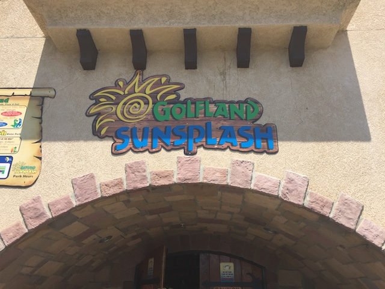
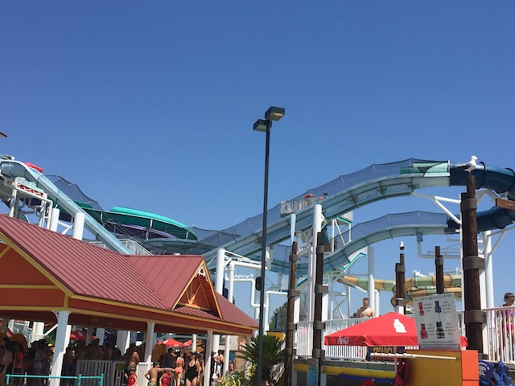
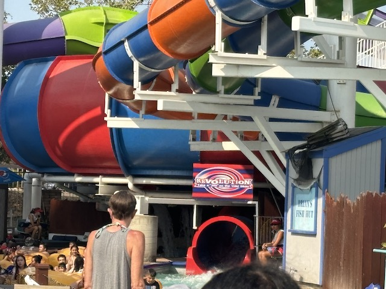
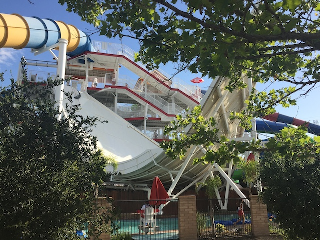
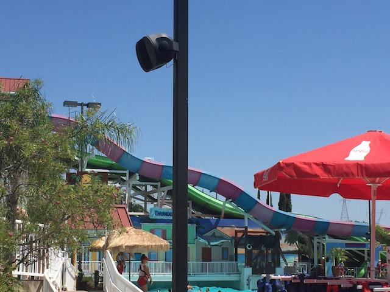
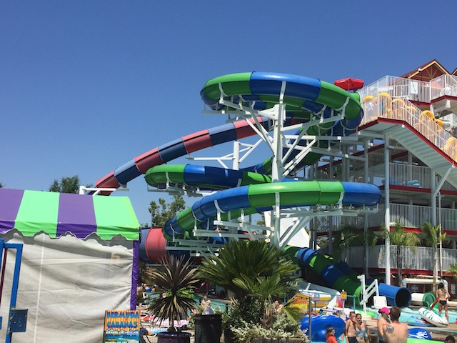
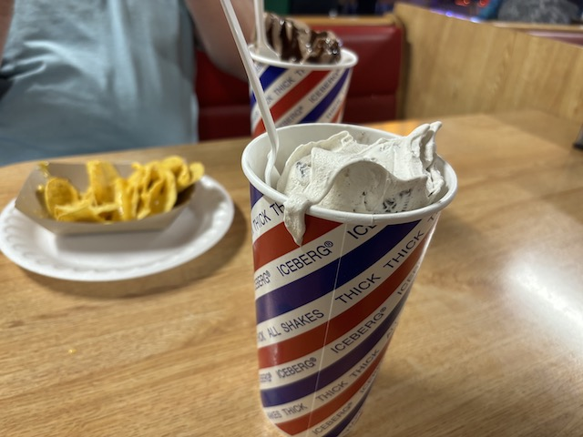

| |
Golfland SunSplash Review

Golfland Sunsplash in Roseville, right by Sacramento, is...an interesting place. It's one of the few places that's not only a typical Family Entertainment Center. Yeah. You know those places. Those super common places. They have miniature golf, as well as an arcade, and a couple of other stuff. I generally call these places Golf'N'Stuff simply because the one in Ventura is called that, and as a force of habit, they're now all called that. Now some of these places up the game of the Family Entertainment Center by essentially becoming a small theme park. They'll add a roller coaster or two, some flat rides, and just a lot more for people to spend the day and enjoy. And yeah. I really like it when Family Entertainment Centers do that. Hell, there's one like that just right down the road in Sacramento. However, some thought, we can top that. And instead of adding some flat rides and a roller coaster, they decided to add an entire freaking water park. No, not just a couple water slides plopped in as a ride. It's not like they're adding those water slides they have in parks with tubes that are fun, but nothing special. No, I'm talking a real full blown legit waterpark. That's exactly where SunSplash comes in. There are two SunSplash parks. The original in Arizona, and the one in California that we're reviewing today. I know that a water park in a Family Entertainment Mini Golf place seems weird and kind of crappy, but no! This place is freaking awesome! They have a ton of really good water parks that they just cram into here. Now that Wild Rivers is gone (R.I.P and F*CK YOU IRVINE COMP!!!), this is now the best water park in California. No really. It is. Just keep reading and see all that they have in this review.
The Major Waterslides
There is a link to a review of all the Major Waterslides at Golfland Sunsplash (Roseville).
Double Dare Review

Master Blaster Review

Revolution Review

Riptide Review

Six Chuter Review

Stealth Review

Stormrider Review

Thunder Falls Review

Vortex Review

Zoomerang Review

All the Other Waterslides
Here are the reviews of all the other water slides at Golfland Sunsplash (Roseville). Well, there's not too much left to cover as reviewed A LOT of all the other individual slides up above with their very own water slide review. But hey. There's still a couple other water slides worth talking about. Let's start out with Dark Holes. Now these slides don't look like anything special. Just a couple of generic tube slides enclosed in the dark. And yeah. They pretty much are that. However, there is one little thing they did to make this a much more enjoyable experience. All the turns are very tight and sharp. So you're sliding down, twisting and gaining speed in the dark, and you really get some good laterals on slides like this. It really surprised me in just how much I liked it. And because it looks generic, there probably isn't a long line for it. There's Twin Twisters. These are typical tube slides. They're kind of like Dark Hole, only outside, and with not nearly as many laterals. But you know what? They're still really fun. I enjoy the slides. They also don't get much of a line. So that's good. Finally, the other slide worth mentioning would be Dark Shot. Now you might not even know that this slide exists. It's part of the big slide complex, and it's so easy to overlook. And in all honesty, you're not really missing too much. The only real reason to ride it is because it never really has a line, and it's more fun to slide down Dark Shot than to walk down. If you basically took Vortex and removed the toilet bowl, that's basically Dark Shot. Now Vortex is one of my all time favorite water slides, but that's solely because of the toilet bowl and getting spun around in there. The drop is just to give you the speed and to make you go "OH CRAP!!!" before you thud. Remove that and just splash into the pool and you just have a quick little WEE slide. Though it's just a fun little forgotten slide and a shortcut down that's certainly more fun than the stairs. Oh, and the no watch rule really pisses me off on that slide. I mean, COME ON!!!

Hey. These slides actually have some fun laterals.
Dining
I never ate at Golfland SunSplash. All the times I was there, they just seemed to serve typical Family Entertainment Center food, greasy pizza, burgers that seem like a school lunch, and Subway, and just walked over to the In'N'Out that was right on by. However, they have recently added Iceberg Drive Inns. Sort of. They don't serve the actual burgers, which bummer. As those do look really f*cking good. Want to try and find one nearby. Except the closest one is at Golfland, which from what I can tell, is the Mini Golf part of SunSplash, only without the water park. And they have one in Anaheim. I presume they only have the shakes too. The only place that seems to have stand-alone Iceberg Drive Inns is Utah. Though I will check out the Anaheim Golfland to see if I can get the burgers there. But anywys, onto the milkshakes. Cause on the one hand, these aren't as amazing as the marketing let on. But they were still really damn good and HUGE!!! Almost made it worth the price.

It may not be the best milkshake ever, but this thing is still HUGE!!!
Theming and Other Attractions
Here are the reviews of all the other stuff at Sun Splash. Well, as for theming, there's not much. Themed water parks do exist, but they're the exception. And in the actual SunSplash water park, there is NOTHING!!! I'm sure if you look in the actual Golfland Mini-Golf courses, there's a little bit of theming. But that's just typical mini-golf theming. NOTHING special and NOTHING to write home about. As for other stuff to do, well, I just laid it out. Miniature Golf. I never actually played Mini-Golf over there. But I will admit that I'm sure that it's fun. And of course, despite SunSplash and this badass water park being here, Golfland SunSplash is at the end of the day, a Golf'N'Stuff style place. So the mandatory arcade is of course, here. Though that's mainly it. You don't really need to add too much more when you have a freaking water park in your Golf'N'Stuff style place. Oh, and if you want water park other stuff, they have the usual. A lazy river and a wave pool. Except for the fact that this lazy river has nearly all the slides dump people and their tubes right into it. So even if you're not a fan of lazy rivers and usually skip them, you'll be in the SunSplash one for at least a little bit.
 Maybe one day, I'll actually play Mini-Golf here.
Maybe one day, I'll actually play Mini-Golf here.
In Conclusion
Golfland SunSplash is a really freaking good water park. I know you would never really suspect that when you hear that this is a water park that is part of a Golf'N'Stuff, that it'd be a water park that's this good. You'd probably call me crazy when you heard me call it the best water park in California. Well, that's partially because the previous best was closed thanks to greedy real estate assholes. But also, just because SunSplash is a GREAT water park. They don't have a ton of space, but they just do all that they can to cram as many cool water slides as they can. And they have a ton. They have a Trap Door, a Master Blaster, 3 different toilet bowls, including my favorite, the Body Toilet Bowl, a tantrum, a half pipe, and just so much. You're always a stones throw away from good water slides here. I think the biggest slide complex here pretty much holds like 2/3rds of all the slides here. And so many of these slides just dump right out into the lazy river. And it's all just a ton to do, and all with great balance. It honestly reminds me the most of that one water park that was included in Skara Sommerland. I know it's weird of me to compare it to a water park in Sweden that I didn't do any of the slides at. But the selection is extremely similar. Honestly, I want to check out the Arizona SunSplash now based on how much I enjoy the one up in Nor-Cal. And after checking the distance on Google Maps, the Arizona one is only a little further away from me. So yeah. Definetly check out SunSplash if you're looking for a really good water park in Northern California. It probably has what you want.
Tips
*Spend all day at the Water Park.
*Make sure you do Vortex multiple times.
*It doesn't matter if you buy your tickets online or at the gate. You have to wait in that line anyways. Actually, this is my one main complaint. Please seperate the line between buying tickets and actually getting in. There is NO reason for people who already bought their tickets online to wait for people who didn't to buy their tickets at the gate. And NO other park does this for obvious reasons. Please change this.
*Have Fun!!!
Location
Roseville, California, U.S.A
Last Day Visited
July 27, 2024
I don't have a SunSplash video as getting water park footage is a nightmare. Especially at a water park like this, it's not happening.
Complete Update List
2024
Nor Cal 2024
2017
Nor Cal 2017
2016
Joker Day
SunSplash 2016
Here's a link to the parks website.
Home
|